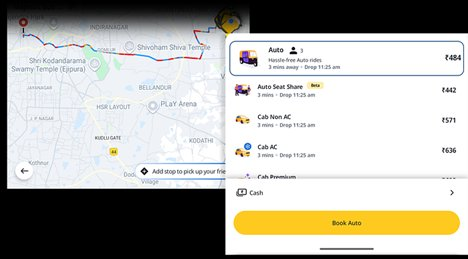
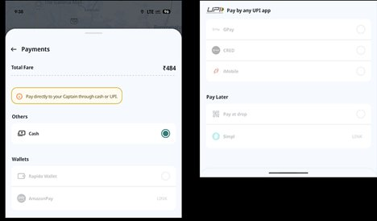
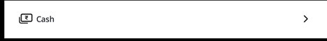
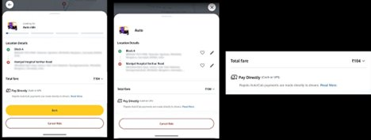
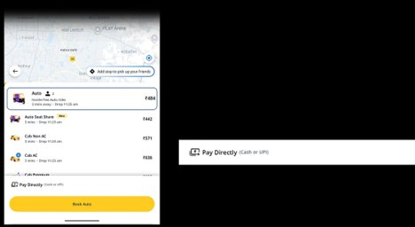

I opened Rapido to quickly book an auto. Everything was smooth — location set, vehicle selection along with fare. Then I saw the payment mode selection.

The booking flow felt seamless — until I reached the payment selection at the bottom.
'Cash' payment was the default selection. I tapped 'Cash' — a page with various payment modes disabled was opened up.

The Payments screen: Cash is selected, but every other option — wallets, UPI apps, Pay at drop — is greyed out and disabled. No explanation why.
But it felt like a waste of a step. It led me to more questions:
Will I get more options later?
Am I supposed to set up something else?
Why are other payment methods disabled?
That moment broke the flow. I was expecting a quick, seamless booking — not an unnecessary decision point for something I had no control over.

' — a single option with no information">The dead end: a single option, no context, no explanation. Tapping leads nowhere useful.
UX Problems
UX Heuristics Violated
Design Recommendations
If only one payment mode is available
- Use "Pay Directly" instead of "Cash" in the label
- Auto-select silently in the backend — don't surface a selection screen
- Skip the selection screen entirely
- On ride summary, show: Payment Mode: Cash or UPI (Pay driver directly)
Improved Screens

The improved flow: "Pay Directly (Cash or UPI)" shown inline on the booking screen — no extra tap, no disabled options, no confusion.

The final state: clean, direct, and honest. The payment mode is visible at the point it matters — the booking confirmation — not buried behind an extra tap.
Dead-end screens don't just frustrate users — they break the implicit contract between the app and the user's trust.